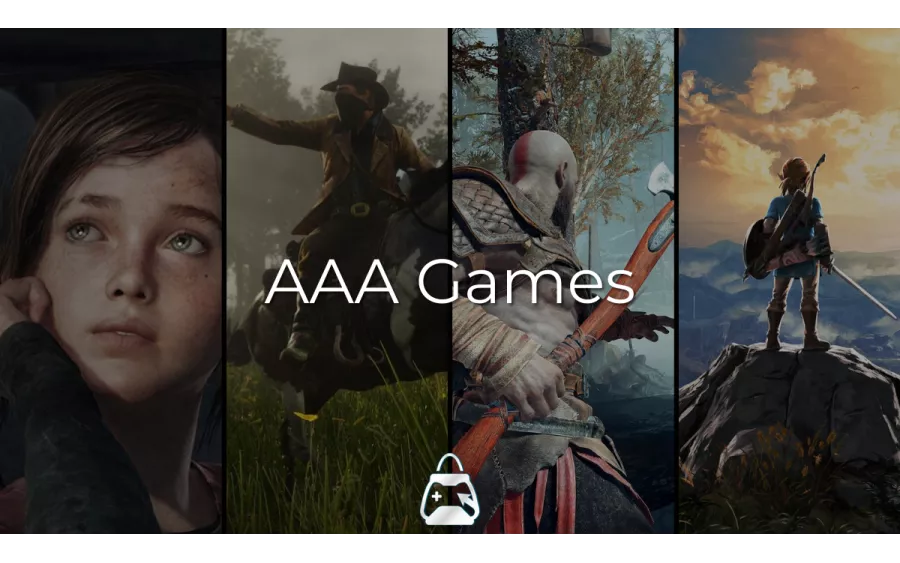

What Are AAA Games?
AAA games are video games developed by large studios with substantial budgets, big development teams, and extensive marketing. These games often combine detailed graphics, engaging stories, impressive sound design, and complex gameplay. They aim to provide players with memorable experiences that feel like stepping into another world.
Some popular examples include Grand Theft Auto V, Cyberpunk 2077, Red Dead Redemption 2, and God of War Ragnarök. Each offers a different experience, from exploring open worlds to following carefully written characters and stories.

What Makes AAA Games Special?
1. Visual Quality
Modern games use advanced lighting, detailed environments, realistic animations, and carefully designed characters. These elements help make fictional locations feel believable and alive.
2. Storytelling
A strong story can turn a game into an emotional journey. Players may explore difficult choices, develop relationships with characters, and discover different outcomes through their decisions.
3. Gameplay and Exploration
Many AAA titles allow players to explore large environments, complete missions, discover hidden locations, and experiment with different play styles. The freedom to explore is one reason these games attract millions of players.
Things Players Often Appreciate
- Immersive environments and detailed worlds
- Memorable characters and soundtracks
- Varied missions and gameplay systems
- New technologies and creative design
A Quick Look at Popular AAA Games
Different games focus on different strengths. The following examples illustrate how varied the AAA gaming experience can be.
| Game | Main Focus | Notable Feature |
|---|---|---|
| Grand Theft Auto V | Open-world action | Large city and multiple protagonists |
| Red Dead Redemption 2 | Adventure | Detailed world and character development |
| Cyberpunk 2077 | Role-playing | Futuristic setting and player choices |
| God of War Ragnarök | Action adventure | Combat and mythological storytelling |
To learn more about the industry, visit the Entertainment Software Association. You can also explore Rockstar Games' official website for information about its titles.
Conclusion
AAA games represent a combination of art, programming, music, design, and storytelling. Their large budgets can support impressive worlds, but a big budget alone does not guarantee a great game. Enjoyable gameplay, thoughtful writing, performance, and creativity matter just as much. For players, the best game is ultimately the one that creates a memorable experience and makes them want to return to its world.